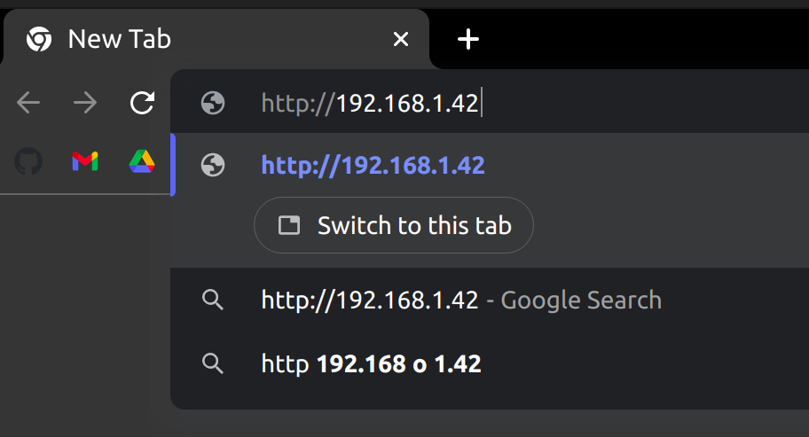
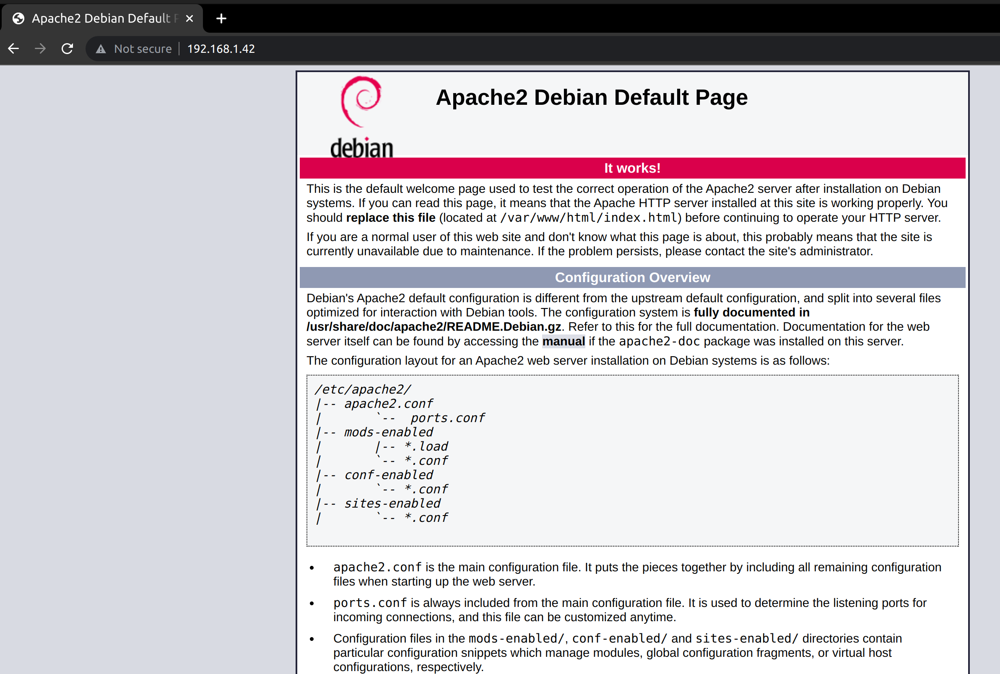
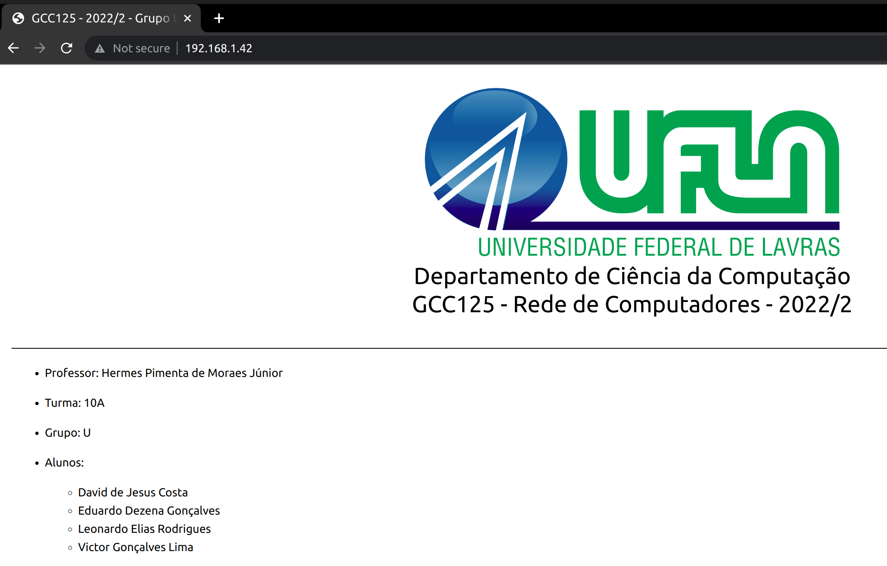
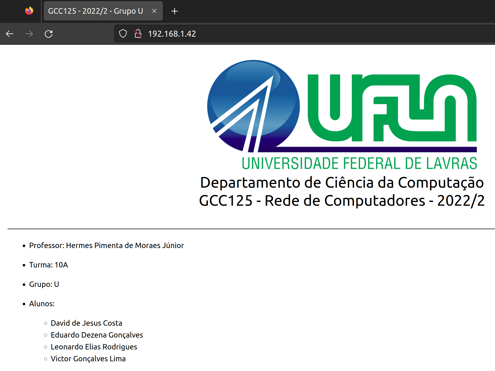
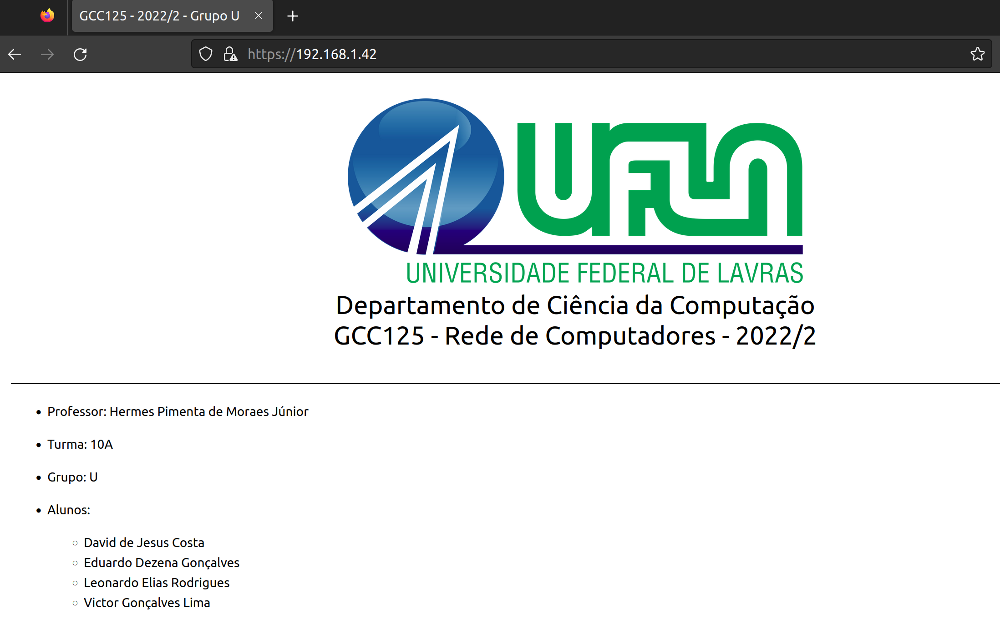

Departamento de Ciência da Computação
GCC125 - Rede de Computadores - 2022/2
Departamento de Ciência da Computação
GCC125 - Rede de Computadores - 2022/2
Professor: Hermes Pimenta de Moraes Júnior
Turma: 10A
Grupo: U
Alunos:
A senha do usuário aluno foi alterado em ambas as VM's (192.168.1.41 e 192.168.1.42) através do comando passwd. A nova senha é gpu2022/2.
sudo passwd
Uma vez logado na VM 192.168.1.41 que se conectará em um servidor do NTP.br e que será a máquina hospedeira do tempo para a VM 192.168.1.42, utilizamos o seguinte comando para vizualizar a data e hora atual.
date
Instalamos o chrony utilizando o comando
sudo apt install chrony
Interronpemos o serviço do chrony para modificar o arquivo de configuração dele.
sudo service stop chrony
Mudamos então o valor da hora para um valor errado (00:00:00) para teste com o comando timedatectl set-time e verificamos com o comando date.
sudo timedatectl set-time 00:00:00
date
Abrimos o seguinte arquivo de configuração do chrony na máquina /etc/chrony/chrony.conf para editar com o comando nano.
sudo nano /etc/chrony/chrony.conf
E configuramos para o seguinte estado, corforme o tutorial do NTP.br.
# servidores publicos do NTP.br com NTS disponível
server a.st1.ntp.br iburst
server b.st1.ntp.br iburst
server c.st1.ntp.br iburst
server d.st1.ntp.br iburst
server gps.ntp.br iburst
# caso deseje pode configurar servidores adicionais com NTS, como os da cloudflare e netnod
# nesse caso basta descomentar as linhas a seguir
# server time.cloudflare.com iburst nts
# server nts.netnod.se iburst nts
# arquivo usado para manter a informação do atraso do seu relógio local
driftfile /var/lib/chrony/chrony.drift
# local para as chaves e cookies NTS
ntsdumpdir /var/lib/chrony
# se quiser um log detalhado descomente as linhas a seguir
#log tracking measurements statistics
#logdir /var/log/chrony
# erro máximo tolerado em ppm em relação aos servidores
maxupdateskew 100.0
# habilita a sincronização via kernel do real-time clock a cada 11 minutos
rtcsync
# ajusta a hora do sistema com um "salto", de uma só vez, ao invés de
# ajustá-la aos poucos corrigindo a frequência, mas isso apenas se o erro
# for maior do que 1 segundo e somente para os 3 primeiros ajustes
makestep 1 3
# diretiva que indica que o offset UTC e leapseconds devem ser lidos
# da base tz (de time zone) do sistema
leapsectz right/UTC
Após salvar o arquivo, iniciamos o serviço do chrony.
sudo systemctl start chrony
Com o seguinte comando, podemos verificar os servidores do NTP.br adicionados como fontes.
chronyc sources
E utilizando o seguinte comando, podemos verificar o status da sincronização do relógio da máquina, que mostrará a mesma sincronizada de acordo com o servidor gps.jd.ntp.br (prioridade).
chronyc tracking
Utilizando novamente o comando date para verificar a data da máquina, percebemos que ela foi sincronizada, e se tentarmos alterá-la novamente com sudo timedatectl set-time 00:00:00, receberemos a seguinte mensagem de erro:
Failed to set time: Automatic time synchronization is enabled
Abrimos novamente o arquivo de configuração na primeira VM (192.168.1.41) com o comando sudo nano /etc/chrony/chrony.conf e adicionamos o seguinte trecho, permitindo que a segunda VM (192.168.1.42) consiga acessar a primeira como cliente NTP.
[...]
# permitime acesso aos seguintes clientes NTP
allow 192.168.1.42
Executamos os mesmos passos anteriores para instalação do chrony na segunda VM (192.168.1.42).
sudo apt install chrony
sudo systemctl stop chrony
Novamente colocamos a data em um estado incorreto para teste e verificamos.
sudo timedatectl set-time 00:00:00
date
Abrimos e modificamos o seguinte arquivo de configuração do chrony na máquina com o comando sudo nano /etc/chrony/chrony.conf e adicionamos a primeira máquina virtual como servidor a ser buscado.
# servidores publicos do NTP.br com NTS disponível
server 192.168.1.41 iburst
[...]
Ativamos o serviço do chrony e verificamos com os seguintes comandos que o tempo da máquina está sincronizada com a máquina 192.168.1.41.
chronyc sources
chronyc tracking
date
Os passos abaixo foram usados para configurar o servidor WEB na VM 192.168.1.42.
A instalação do apache 2 foi feita com os seguintes comandos:
sudo apt update
sudo apt install apache2
Em um browser de uma máquina conectada às VM's por meio de VPN, é digitado o endereço IP da VM do servidor WEB: http://192.168.1.42.
A seguinte página do servidor web do Apache é exibida, mostrando o funcionamento.
Com o seguinte comando, vamos ao diretório do servidor apache onde os arquivos html serão dispostos:
cd /var/www/html/
Com o seguinte comando, removemos todos os arquivos da pasta a fim de preparar o ambiente para nossos arquivos.
sudo rm *
Nossos arquivos são baixados do repositório https://github.com/Victorgonl/GCC125-20222-GrupoU através do comando wget dentro da pasta /var/www/html/.
sudo wget https://raw.githubusercontent.com/Victorgonl/GCC125-20222-GrupoU/master/index.html
sudo wget https://raw.githubusercontent.com/Victorgonl/GCC125-20222-GrupoU/master/ufla.png
sudo wget https://raw.githubusercontent.com/Victorgonl/GCC125-20222-GrupoU/master/TI-Relatorio-Etapa1.html
sudo wget https://raw.githubusercontent.com/Victorgonl/GCC125-20222-GrupoU/master/TI-R1-3.2-1.png
sudo wget https://raw.githubusercontent.com/Victorgonl/GCC125-20222-GrupoU/master/TI-R1-3.2-2.png
sudo wget https://raw.githubusercontent.com/Victorgonl/GCC125-20222-GrupoU/master/TI-R1-3.3.png
Ao acessarmos novamente por um browser de uma máquina conectada às VM's por meio de VPN o endereço http://192.168.1.42, encontramos nossa página inicial.
Primeiro, verificamos que o pacote opensslestá instalado em nossa máquina de servidor web, a VM de endereço 192.168.1.42.
sudo apt install openssl
Em seguida, habilitamos os módulos ssl e rewrite do Apache.
sudo a2enmod ssl
sudo a2enmod rewrite
Editamos o seguinte arquivo de configuração do Apache com nano.
sudo nano /etc/apache2/apache2.conf
E adicionamos as seguintes linhas:
[...]
<Directory /var/www/html>
AllowOverride All
</Directory>
Criamos uma pasta para guardar o certificado ssl que será criado e abrimos a mesma.
sudo mkdir /etc/apache2/certificate
cd /etc/apache2/certificate
Dentro da pasta, criamos uma chave privada e o certificado ssl.
sudo openssl req -new -newkey rsa:4096 -x509 -sha256 -days 365 -nodes -out apache-certificate.crt -keyout apache.key
Neste ponto, entramos com as seguintes informações requisitadas:
Country Name (2 letter code) [AU]:BR
State or Province Name (full name) [Some-State]:Minas Gerais
Locality Name (eg, city) []:Lavras
Organization Name (eg, company) [Internet Widgits Pty Ltd]:Universidade Federal de Lavras
Organizational Unit Name (eg, section) []:Departamento de Ciência da Computação
Common Name (e.g. server FQDN or YOUR name) []:192.168.1.42
Email Address []:.
Em seguida, editamos o seguinte arquivo com o comando nano:
sudo nano /etc/apache2/sites-enabled/000-default.conf
O arquivo apresenta inicialmente as configurações:
<VirtualHost *:80>
[...]
</VirtualHost>
Modificamos o mesmo para as seguintes configurações:
<VirtualHost *:443>
[...]
SSLEngine on
SSLCertificateFile /etc/apache2/certificate/apache-certificate.crt
SSLCertificateKeyFile /etc/apache2/certificate/apache.key
</VirtualHost>
Por fim reiniciamos o serviço do Apache.
sudo systemctl restart apache2
Testamos então o acesso a página inicial utilizando http.
A página é carregada.
Agora tentaremos acessar a página utilizando https.
Inicialmente é gerado uma aviso de segurança The certificate is not trusted because it is self-signed, isto porque o certificado ssl foi criado pelo próprio servidor, o que não garante segurança real aos usuários.
Ignorando o avisando, a página html criptografada é carregada.
Este relatório poderá ser acessado por meio do link http://192.168.1.42/TI-Relatorio-Etapa1.html disponibilizado na página inicial acima.
Os arquivos .pkt estão disponíveis na página inicial do servidor web.
KUROSE, Jim; ROSS, Keith W. Redes de computadores e a internet: uma abordagem
top-down. 7ed. São Paulo: Pearson, 2013.
MORAES JÚNIOR, H. P.. Materiais da Disciplina GCC125 - Redes de Computadores. Universidade Federal de Lavras. Acesso em: 10 de jan. de 2023.
Sincronize seus dispositivos Linux ou BSD. Disponível em: https://ntp.br/guia/linux/. Acesso em: 10 de jan. de 2023.
chronyc - command-line interface for chrony daemon. Disponível em: https://manpages.ubuntu.com/manpages/jammy/man1/chronyc.1.html. Acesso em: 10 de jan. de 2023.
Enable HTTPS on Apache. Disponível em: https://techexpert.tips/apache/enable-https-apache/. Acesso em: 10 de jan. de 2023.